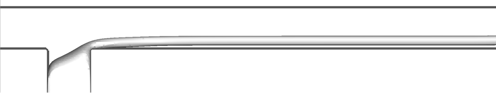

← Research · M.S. (R), IIT Delhi · 2018 – 2019
💦 Droplet formation in microfluidic T-junctions
Physical Review Fluids · 2020How droplets form and how the flow regime changes in a T-shaped microfluidic device.
What I did
- Parallel (MPI) lattice Boltzmann solver written from scratch in C/C++.
- Validated against in-house experiments.
V. G. Agarwal, R. Singh, S. S. Bahga, A. Gupta, Physical Review Fluids 5, 044203 (2020).
Experiment vs. simulation
High-speed movies of the T-junction experiments (left) next to the lattice Boltzmann simulations (right) for the three droplet flow regimes.
Experiment
LBM simulation
Droplet at T-junction
Droplet in channel
Parallel flow

Simulations: Cr = 100, 10 and 0.01 (top to bottom) at Ca = 0.5, n = 0.5.
Effect of shear thinning
Lower power-law index n (stronger shear thinning of the continuous phase) delays pinch-off and gives larger droplets (Ca = 0.1, Cr = 1).